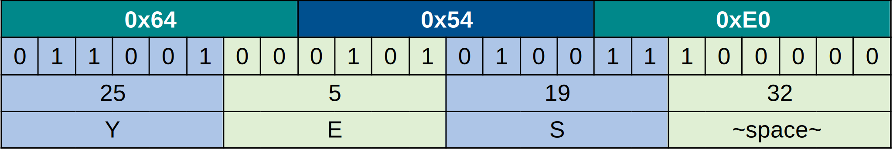
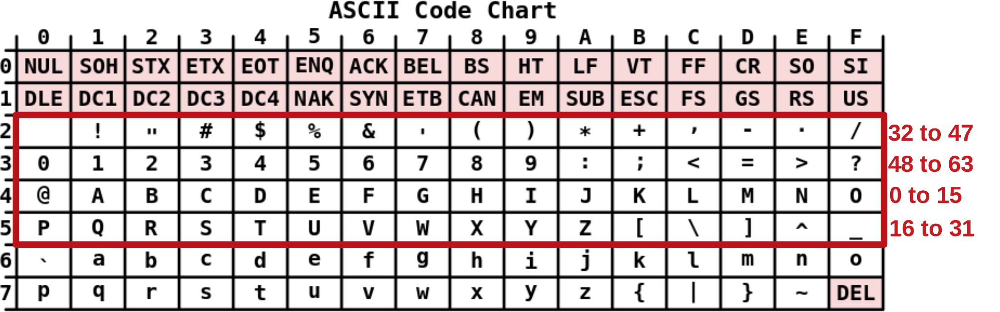

{{ title }}
HART is a widely used industrial grade communication protocol. One or many field devices can be queried or configured remotely via the use of HART commands. The goal of this writing is to provide a simple introduction to the software level of the protocol by short example codes.
While HART claims to be an open protocol, I found the concrete specifications really hard to acquire, since they aren't public and are locked behind paywalls. With the few documentations available somewhere on the internet, one can set up a working communication channel, but this isn't an easy task. This article covers
- software level: not discussing how the digital signal is modulated to fit the 4-20mA analog signal without interference, but rather what commands to send to the serial port. Also in the OSI model, this software level means the data link layer (and the lowest level of the application layer), not the physical or the full application layer.
- HART 5 protocol version: fairly old but still relevant
- wired serial communication, so wireless is beyond the scope of this post
Also this article is not a documentation nor it aims to be one. The most important concepts are covered alongside with tips or warnings about my experience with these commands.
Setting up with command zero
Assuming you have your field device wired in properly, and you have connected your HART modem to both the field device and your PC (USB-serial or serial; it doesn't matter), we are ready to write the first program. Our language of choice will be python, due to its simplicity, and relatively clean syntax, but you can use whatever language you prefer, as long as you can set up serial communication within it.
With python, opening a serial port can be done in one line. Also the keyword arguments present nicely how the serial port should be set up: baudrate, parity, etc.
{{ code("serial_open.py") }}We are ready to send our first command; command zero. I should mention now, that we are going to use the hexadecimal notation, so unless stated otherwise, a value of 67 means the hexadecimal value of 0x67.
{{ code("command_0.py", "python") }}
Most likely it was unclear what this command exactly does, so let's break it down into parts:
FF FF FF FF FF FF FF FF FF FF 02 80 00 00 82
- FF: Preamble bytes. Each request and response starts with a sequence of full one bytes (FF) in order to help the endpoints detect a message. A preamble count of between 5 and 20 is advised, I found 10 sufficent in any case.
- 02: Frame delimiter. Values ending with 1 inicate burst mode, when the filed device continuously sends sensor informations to the master. Values ending with 2 indicate normal requests, while values ending with 6 indicate responses. There is also a difference between addressing modes signified here: if the byte starts with 0, it indicates long addressing, while 8 means short. As you can see we are now making a request in short addressing mode.
- 80: The short address which is only 4 bits long and half the remaining bits are used as a bitmask: The first bit indicates that the master sending this request is a primary master (a setup with multiple masters is possible, in that case the other masters are secondary), the second bit tells us if the device is in burst mode (it isn't), and the last four bits make the poll address up. There are 16 possible poll adresses and a device always occupies one of them. A setup with multiple slaves requires the usage of different poll addresses, but for configuring a single device, our best guess is usually address zero.
- 00: Command number. In this case the command number is zero, so nothing to explain further.
- 00: The length of the message (only the additional data part). This data part is used for storing parameters, but since command 0 has no parameters, the value of this byte will be zero as well.
- 82: Checksum. Calculated by XORing the all bytes in the frame excluding the preamble.
| Code | Meaning |
|---|---|
| 0x01 | Burst mode short access |
| 0x02 | Request short access |
| 0x06 | Response short access |
| 0x81 | Burst mode long access |
| 0x82 | Request long access |
| 0x86 | Response long access |
Since XORing two same bits result in zero, and XORing with a zero keeps the value inact, including the preambles in the checksum makes it valid, but only if the number of preamble bytes is even. If this number suddenly changes to an odd one, it may introduce hard to find bugs.
After a request we await for the response. We usually don't know the response size beforehand, so the easiest way is to allocate a buffer large enough to store any answer.
{{ code("command_resp.py", "python") }}FF FF FF FF FF 06 80 00 0E 00 80 FE 26 3B 06 05 02 01 20 00 2A BC 31 6C
Breaking it down:
- FF: The field device also sends preambles as well. In order to make this section less repetitive, I am goind to omit parts which were already covered.
- 06: As you can see, 06 means response.
- 0E: We have 0x0E pieces of data bits (14 in decimal) which means the next 14 bytes will be the data of the response.
- 00: Response code / error code / communication status. If the first bit is active, then it indicates a communication error: something went wrong during the serial transmission, and the remaining seven bits indicate the error. Otherwise if the first bit is off, this byte should be interpreted as a response code, 00 means everything is fine, different values mean different errors, but they are specific to devices and commands.
- 80: Similar status bitfield as the previous one, but this time the actual bits are more clearly defined:
- FE: The value of this byte is always 0xFE (decimal 254).
- 26: Device manufacturer's ID. You can use this or any other table you find to check the manufacturer, which is Rosemount in our case. Since this information is held in just one byte, newer manufacturers might not appear on this table as there were no place left for them, getting the actual manufacturer might be harder this case and might require specific commands to achieve.
- 3B: Manufacturer's device ID, purely manufacturer specific.
- 06: Number of preambles required by the device for requests. You can probably get away with a few more or less bytes, but you should follow this guideline if your working environment allows it (for example you are not restricted to fixed length messages). Also note that this is NOT the same as the number of preambles the device sends on response (it was 5 in our case); this might be an other source of bugs.
- 05 02 01 20: Revision numbers. In order: Command set (5 means HART 5 in this case), Transmitter specific revision code, Software revision, Hardware revision. They may be useful when debugging.
- 00: Flags, I have never seen them in use. You can probably find the meaning of its respective bits in some documentation, but for the devices I used, they never presented any usable information.
- 2A BC 31: Device ID number, which is supposed to be unique for each and every device form the same manufacturer with the same device ID. The three bytes represent a 24 bit integer, but I found conflicted information about its endianness. While you are going to use this value later with long addressing, this number will get converted back to bytes, so the interpretation of the bytes doesn't really matter, only their values do.
- 6C: Checksum is calculated in the response as well.
| Active bit | Meaning |
|---|---|
| 0x80 | Device Malfunction |
| 0x40 | Configuration Changed |
| 0x20 | Cold Start |
| 0x10 | More Status Available |
| 0x08 | Loop Current Fixed |
| 0x04 | Loop Current Saturated |
| 0x02 | Non-Primary Variable Out of Limits |
| 0x01 | Primary Variable Out of Limits |
As you can see some of them are perfectly normal: cold start and configuration changed usually occurs when calibrating a device. Other codes indicate light or severe errors. More Status Available means you have to issue a specific command to retrieve this additional status info.
Read dynamic variables with command 3
We are now going to take a look at long addressing mode and dealing with floating point numbers.
{{ code("command_3.py", "python") }}Again breaking down to parts:
FF FF FF FF FF FF 82 A6 3B 2A BC 31 03 00 6C
- 82: Indicates long mode request.
- A6: A long address is comprised of 5 bytes. The first byte is the same as the manufacturer ID but with the first 2 bits used as a bitfield seen before. Again, the first bit is active if a primary master is asking, and the second indicates burst mode.
- 3B: Manufacturer's device ID, unchanged.
- 2A BC 31: Device ID number, you can paste the same bytes as read from command 0, that is why I did not bother with an integer respresentation.
- 03: Command 3 and the rest is the same.
And the response:
{{ code("command_resp.py", "python") }}FF FF FF FF FF 86 A6 3B 2A BC 31 03 1A 00 80 41 AE 00 00
20 46 1C 3F F6 24 7F A0 00 00 24 7F A0 00 00 24 7F A0 00 00 82
The line break has no special meaning, it is only there to stop the text from overflowing. Also to reduce visual clutter, only the data bytes are highlighted now.
- 00 80: Status and error codes work the same way as seen before.
- 41 AE 00 00: Five values were sent back. Each value except the first is preceded by an unit type indicator byte (24, 20), and you should read the concrete unit type from a table similar to the manufacturer one. The first value tells us the current, the second is the primary variable which is always sent. Secondary, tertiary and quaternary variables belong to different miscellaneous sensors. Sometimes they contain valid data, sometimes only some constant invalid value is sent, and sometimes they don't even get sent at all, in this case the response is shorter.
| Meaning | Raw bytes | Value | Unit code | Unit type |
|---|---|---|---|---|
| Current | 41 AE 00 00 | 21.75 | - | mA |
| Primary | 46 1C 3F F6 | 9999.99 | 20 | °C |
| Secondary | 7F A0 00 00 | NaN | 24 | mV |
| Tertiary | 7F A0 00 00 | NaN | 24 | mV |
| Quaternary | 7F A0 00 00 | NaN | 24 | mV |
No sensors were connected to the field device hence the invalid values. Also the floats are interpreted as big endian.
Read message with command 12 (0x0C)
As now almost every data type is covered except the packed strings. As a final example we are going to read the message written into our field device.
{{ code("command_12.py", "python") }}The command structure shouldn't require any explaination now.
FF FF FF FF FF FF 82 A6 3B 2A BC 31 0C 00 B4
And the response is:
{{ code("command_resp.py", "python") }}
FF FF FF FF FF 86 A6 3B 2A BC 31 0C 1A 00 80
64 54 E0 25 48 17 3D 22 D3 82 08 20 82 08 20 82 08 20 82 08 20 82 08 20 63
All the returned data is one 32 characters long string. Each character is stored on 6 bits using some base64-like encoding, so the whole byte sequence is 24 bytes long. That also means that we can decode this stream 3 bytes at a time. Take a look at the first bunch:
The full string says: "YES IT WORKS" followed by a buch of padding spaces. The encoding of the 6 bit characters is based on the ASCII table, but with some tweaks:
Endnote
There are three main command groups defined in HART. Universal commands must be implemented in each device, common practice commands should be implemented, and device specific commands are specific to manufacturer and device type as the name suggests. Our three example commands were universal commands, but common practice ones work in a similar manner. Device specific command on the other hand usually require DD libraries, where request and response commands with their data types are defined. Sadly the format of these libraries are even more obscure than the regular HART command formats, so I have no information about them.